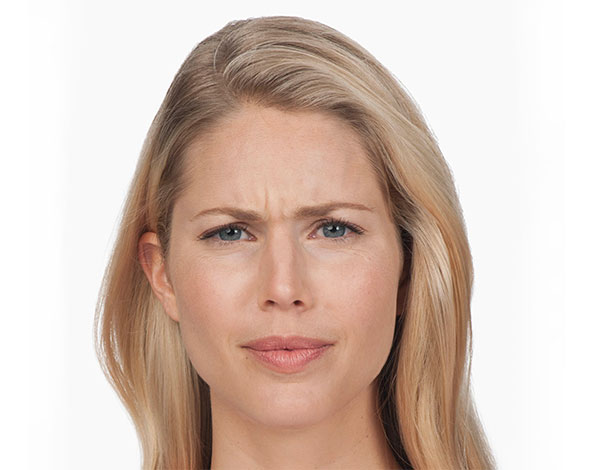
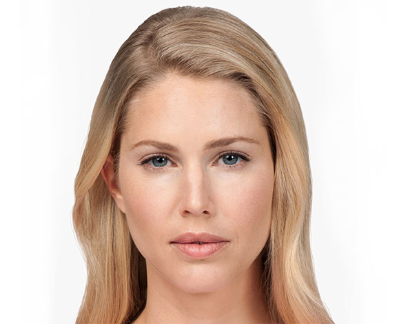

Botox injections are used to soften moderate to severe facial wrinkles. Botox targets the repeated muscle contractions from frowning
and squinting over the years. BOTOX® Cosmetic is a prescription medicine that is injected into muscles
and used to temporarily improve the look of moderate to severe forehead lines, crow’s feet lines,
and frown lines between the eyebrows in adults.
Wrinkles result from a combination of many factors.
It’s not just about cellular changes that can occur over time, reduction of collagen, or damage caused by free radicals in the sun and the environment.
When you frown or concentrate, the muscles between your brows contract, causing your skin to furrow and fold.
And when you squint, the muscles around your eyes contract and cause crow’s feet.
BOTOX® Cosmetic works beneath the skin’s surface and targets the underlying muscle activity that causes frown lines and crow’s feet.
You may begin to notice results within 24 to 48 hours for moderate to severe frown lines, with results lasting up to 4 months. Some patients report that being injected with BOTOX® Cosmetic feels like a pinch. The actual injection process takes about 10 minutes.
Before:
After:
